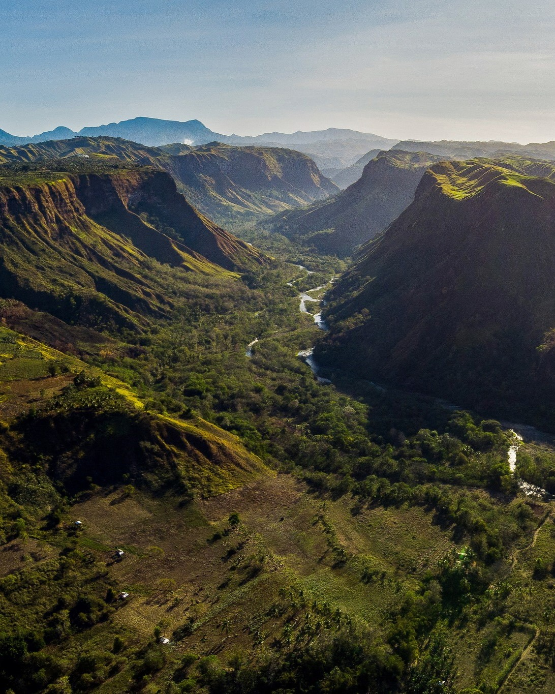
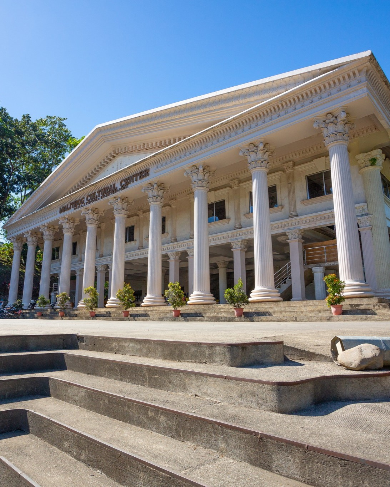

Culture
Araw ng Malitbog (Kadisnon Festival) is one of the highlights of our cultural calendar. The annual festival, celebrated from December 14th to 16th, brings the community together in joyous festivities. The event features traditional dances, vibrant street parades, local music performances, and showcases of artisanal crafts. Visitors can immerse themselves in the rich heritage of Malitbog by indulging in delicious local cuisine, experiencing historical reenactments, and participating in interactive cultural workshops. Each year, the festival also honors the town's history and traditions, providing a unique opportunity for both locals and tourists to connect and celebrate.

